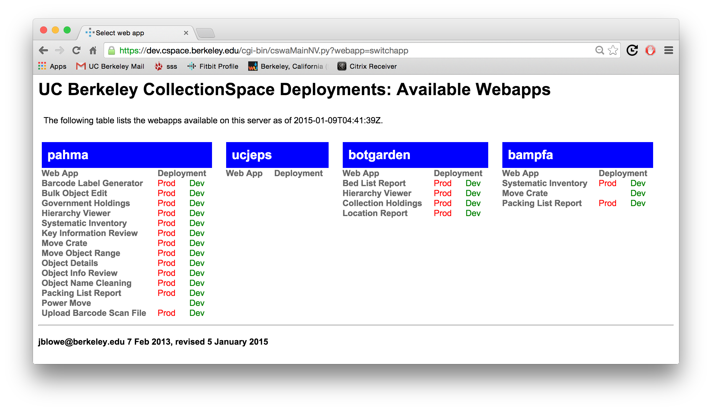

The webapps are a suite of browser-based tools which access the CollectionSpace database to provide critical functionality not provided by the "regular" interface.
In general, the webapps operate on sets of records, a set being defined as something like "all objects in a range of Museum numbers", e.g., "1995.12.1" TO "1992.12.9", or "all objects in a location or sequence of locations" (e.g. "Collection Storage, 01A" to "Collection Storage, 03B"). Typical operations performed are updating certain fields for those sets of records, or creating move or inventory actions for them.
Besides move and data update operations, a few other webapps provide a means to print barcodes and view database content (e.g., authority hierarchies) in useful ways.
There are two classes of webapps in use at BAMPFA:
|
|
See Getting to the Webapps for instructions on where and how to login to this system.
A screenshot of each of these is provided below with a short description of its operation.
|
This webapp allows registrars to reconcile the results of a (normally physical) inventory. User enters a range of storage locations and the objects in those locations are displayed; the user can then indicate (using the radio buttons) whether the object is indeed located or not. Other reports or the regular UI can be used to follow up on the objects that were not located. [NB: There is a printed "Systematic Inventory" PDF report, generated by iReport, that can be used alongside this webapp. The Systematic Inventory webapp is essentially an editable version of this PDF report. Data entry can be done quite quickly, in large part due to the close similarity of the two documents.] |
|
This webapp allows registrars, collections managers, and conservators to record the movement of a box or other container—and all of its contained objects—to a new storage location. The user must specify the box, crate, or container name, its current storage location, and the desired new storage location. The user can choose to exclude any objects from the planned move (for instance, if objects were removed just prior to the planned move) by selecting the "Not Found" radio button. Once "Move Objects" is clicked, all displayed objects not marked as "Not Found" will be recorded as having been moved to the new storage location, while remaining in their current box. Objects marked as "Not Found" will have their new location set to "Not Found," and will have to have their actual current location manually set in the CSpace UI. This webapp can also be used to inventory the contents of a box or crate, as it performs the same functionality as the Systematic Inventory webapp, but allows selection of a single box, rather than all boxes and all objects at a specific location. |
|
This webapp uploads media files (usually images) to CollectionSpace. The user selects a set of files on their local computer (using the "Choose Files" button) and then uploads these to the CSpace server. They are then "ingested" into CSpace via a nightly import job. There is an option to perform the ingestion process online, but since the process is slow -- several seconds at least per image -- the usual practice is to use the nightly batch option. |
|
This webapp produces both packing lists and decanting lists, and offers PDF and CSV options for both. For packing lists, a range of storage locations is entered, and a list of all objects at those locations is generated, grouped by current storage location. To restrict this list to objects from a certain place or continent, a collection place can be specified. To produce decanting lists that facilitate organizing objects by cultural group, the user need only check the "group by culture" checkbox. |
Logging in
Selecting a webapp
|  |
{kind=link}
{kind=link}
{kind=link}
{kind=link}
{kind=link}